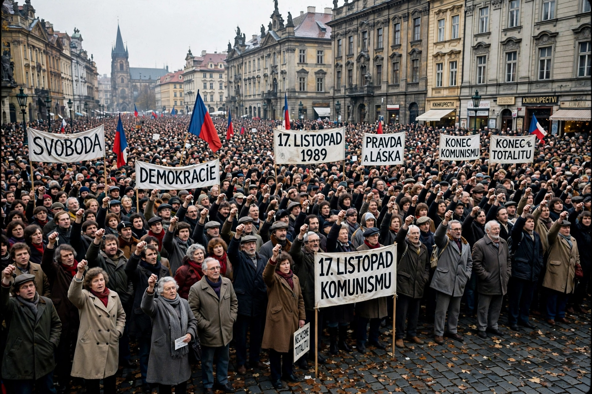

Velvet Revolution
| Velvet Revolution | |
| Date | 17 November – 29 December 1989 |
|---|---|
| Location | Czechoslovakia |
| Result | Collapse of the Communist government; Václav Havel elected president; free elections in June 1990 |
| Key figures | Václav Havel, Alexander Dubček, Miloš Jakeš |
The Velvet Revolution (Czech: sametová revoluce) was a non-violent transition of power in Czechoslovakia between 17 November and 29 December 1989 that ended 41 years of one-party Communist rule. Massive popular demonstrations, a general strike, and the refusal of the regime to use large-scale violence brought the government down within weeks; the revolution's gentleness gave it its name.

Background
Since the crushing of the Prague Spring in 1968, Czechoslovakia had been governed by a hardline "normalization" regime. Dissent persisted through Charter 77 and figures such as playwright Václav Havel. "Palach Week" in January 1989, commemorating Jan Palach, signaled growing unrest. Through 1989, Communist governments fell across the region: Poland's partially free elections, Hungary's border opening, East German mass protests, and the fall of the Berlin Wall on 9 November isolated the Prague regime.
Events
On 17 November, police violently suppressed a legal student demonstration in Prague commemorating a student murdered by the Nazis; a rumor that a student had been killed galvanized the public. Theaters went on strike, students occupied universities, and Havel and others founded the Civic Forum (and in Slovakia, Public Against Violence) to coordinate the opposition. Demonstrations in Wenceslas Square grew to hundreds of thousands; on 24 November the Communist Party leadership resigned; a two-hour general strike on 27 November demonstrated nationwide support. The government agreed to end the party's leading role, a government with non-Communist ministers took office on 10 December, and on 29 December the Federal Assembly elected Václav Havel president. Alexander Dubček became chairman of the assembly. Free elections followed in June 1990.
Aftermath
Czechoslovakia's transition was among the smoothest in the former Eastern bloc. The country split peacefully into the Czech Republic and Slovakia on 1 January 1993 in the "Velvet Divorce". The Velvet Revolution is commemorated on 17 November, a public holiday in both successor states.